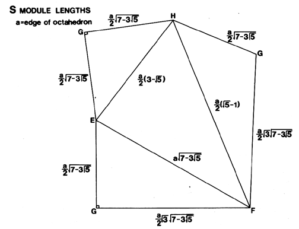

Fig. 988.13A S Quanta Module Edge Lengths: This plane net for the S Quanta Module shows the edge lengths ratioed to the unit octa edge (octa edge = tetra edge.)
Copyright © 1997 Estate of R. Buckminster Fuller